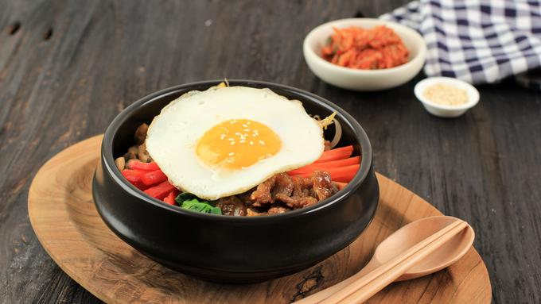
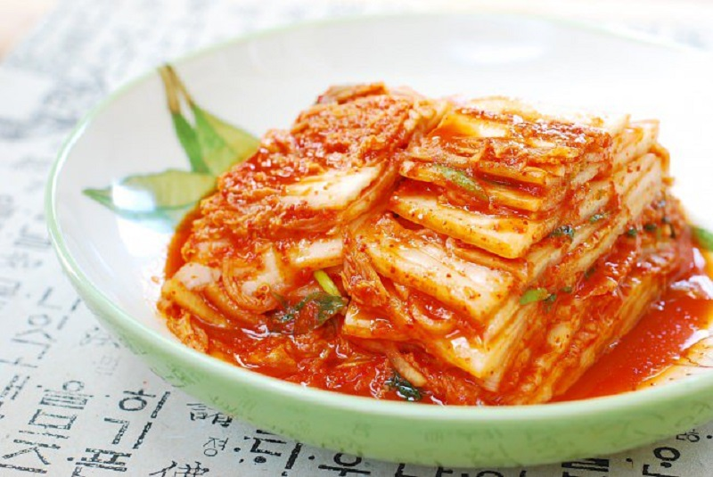
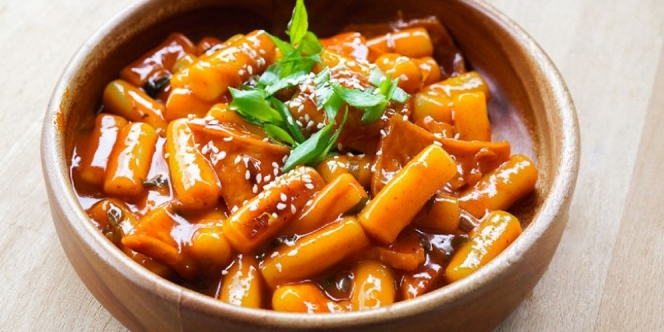

{kind=link}
{kind=link}
{kind=link}
{kind=link}
{kind=link}
{kind=link}
{kind=link}
{kind=link}
{kind=link}
Address
Jl. Puri Mutiara II no. 28B, RT.08/RW.11, Cilandak Barat, Cilandak,
Jakarta Selatan, DKI Jakarta, 1430.

Destinasi Wisata di Korea Selatan.
Halo! Selamat datang di website mengenai beragam wisata di Korea Selatan. Bagi kalian yang ingin mengunjungi wisata di Korea Selatan, kami akan memberikan beberapa referensi tempat wisata menarik yang bisa kamu kunjungi.
Inspired by Visit Korea, see more.
Sebelum masuk ke rekomendasi destinasi tempat wisata, kita ulas sedikit mengenai sejarah dan profile dari Negara Ginseng tersebut, yuk Chingu!
Republik Korea atau lebih dikenal sebagai Korea Selatan, adalah sebuah negara di Asia Timur yang meliputi bagian selatan Semenanjung Korea. Di sebelah utara, Korea Selatan berbatasan dengan Korea Utara, di mana keduanya bersatu sebagai sebuah negara hingga tahun 1948. Laut Kuning di sebelah barat, Jepang berada di seberang Laut Jepang dan Selat Korea berada di bagian tenggara. Negara ini dikenal dengan nama Han-guk oleh penduduk Korea Selatan dan disebut Nam Cho-son oleh orang Korea Utara. Ibu kota Korea Selatan adalah Seoul.
Feel free to see various scenery from the four seasons in Korea.
Let's try a variety of delicious traditional South Korean dishes.

BibimbapSecara harfiah, bibimbap berarti nasi campur yang berasal dari kata bibim yang artinya campur dan bap yang artinya nasi. Cara menyantapnya pun harus dicampur terlebih dahulu. Ada beragam variasi dari menu khas ini sesuai dengan daerahnya di Korea. Asal usul nasi campur khas Korea ini pun konon punya banyak versi. Salah satunya mengatakan bahwa makanan ini dibuat dari sesaji yang dipersembahkan kepada arwah leluhur. Usai melaksanakan jesa, yaitu prosesi memperingati kematian leluhur, orang-orang saling berbagi makanan sesaji dan mencampurkannya ke dalam mangkuk. Makanan sejenis lain ada pula yang disebut dengan heotjesabab, makanan sehabis jesa. |

KimchiKimchi adalah fermentasi sayuran khas Korea yang sudah ada sejak sekitar 4.000 tahun lalu. Ciri khas kimchi adalah warnanya yang merah karena penggunaan bubuk cabai. Sampai sekarang, kimchi menjadi sajian yang wajib ada di meja makan orang Korea. Salah satu yang paling dikenal oleh masyarakat dunia adalah baechu kimchi yang terbuat dari sawi putih. Selain itu ada juga kkakdugi, terbuat dari lobak putih yang diiris dadu. Ada juga kimchi yang rasanya tidak terlalu pedas malah cenderung manis yaitu nabak kimchi, terbuat dari sawi putih dan lobak. Meskipun menjadi makanan khas Korea, kimchi juga bisa diterima oleh masyarakat dunia, salah satunya Indonesia. Kata Dae-hoon, ada beberapa makanan lokal yang cocok dipadukan dengan kimchi dan makin terasa lezat ketika disantap. |

TteokbokkiBicara tentang jajanan khas Korea, salah satu jenis yang paling populer adalah Tteokbokki. Jajanan yang punya nama lain "pojangmacha" ini terbuat dari tepung beras, yang dibentuk jadi adonan padat, serta dimasak dalam saus kental yang pedas. Dirunut dari sejarahnya, Tteokbokki pertama kali muncul di penghujung era Dinasti Joseon, yakni dalam sebuah buku yang disebut "Siui Jongseo". |

BulgogiBulgogi terbuat dari daging sapi kualitas terbaik atau premium. Makanya pada zaman itu, hanya kalangan bangsawan yang dalam menikmati bulgogi. Umumnya daging sapi bagian sirloin, tenderloin yang digunakan untuk bahan bulgogi. Meski khas dari Korea, namun makanan ini dapat diterima lidah semua warga dunia. Sebab bulgogi memiliki rasa yang mirip dengan BBQ. |
Let's find the best lodging and transportation closest to tourist attractions.
Tujuan utama dari website Let's Travel Korea adalah untuk memperkenalkan sekaligus merekomendasikan beragam wisata yang ada di Korea masyarakat umum yang ingin melakukan perjalanan wisata ke Korea Selatan. Mulai dari tempat wisata yang sesuai dengan musim pilihan masyarakat serta makanan tradisional khas Korea yang tidak boleh dilewatkan pun kami sampaikan. Melalui website ini, saya mengharapkan bermanfaat bagi masyarakat yang ingin melakukan liburan di Korea Selatan.
Please fill out the form below if you want to join in our team.
Please to contact us if you wanna join us to member
Jl. Puri Mutiara II no. 28B, RT.08/RW.11, Cilandak Barat, Cilandak,
Jakarta Selatan, DKI Jakarta, 1430.
0858-1311-6079
pingkankemala9f@gmail.com